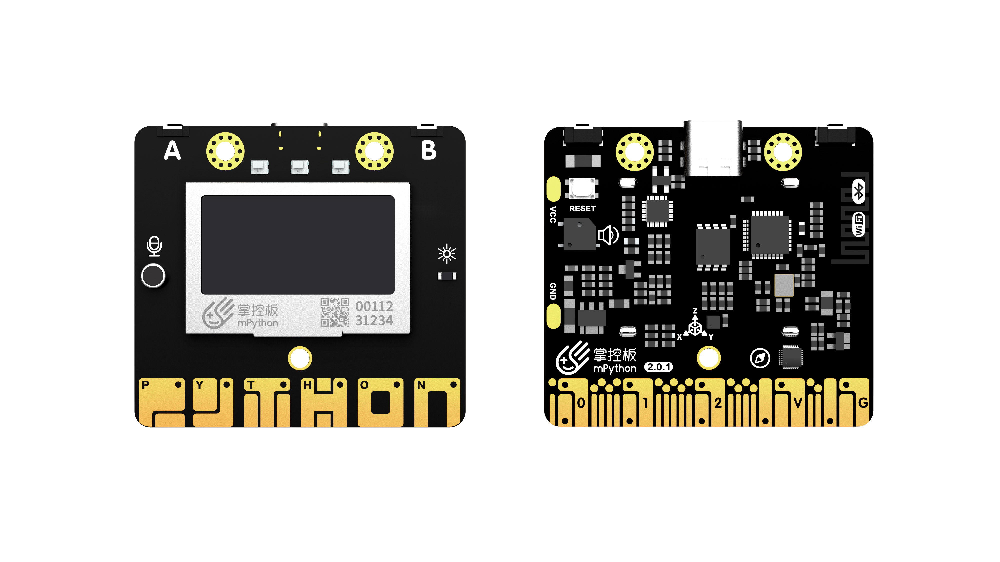

硬件概述¶
mPython掌控是一块MicroPython微控制器板，很好的支持MicroPython/Python软件上功能。
技术参数¶
该板具有以下硬件特性:
- ESP-32主控
- 处理器：Tensilica LX6双核处理器（一核处理高速连接；一核独立应用开发）
- 主频：高达240MHz的时钟频率
- SRAM：520KB
- Flash：8MB
- Wi-Fi标准：FCC/CE/TELEC/KCC
- Wi-Fi协议：802.11 b/g/n/d/e/i/k/r (802.11n，速度高达150 Mbps)，A-MPDU和A-MSDU聚合，支持0.4us防护间隔
- 频率范围：2.4~2.5 GHz
- 蓝牙协议：符合蓝牙v4.2 BR/EDR和BLE标准
- 蓝牙音频：CVSD和SBC音频低功耗：10uA
- 供电方式：Micro USB供电
- 工作电压：3.3V
- 最大工作电流:200mA
- 最大负载电流:1000mA
- 掌控板载
- 三轴加速度计MSA300,测量范围:±2/4/8/16G
- 地磁传感器MMC5983MA,测量范围:±8 Gauss;精度0.4mGs,电子罗盘误差±0.5°
- 光线传感器
- 麦克风
- 3 颗全彩ws2812灯珠
- 1.3英寸OLED显示屏，支持16*16字符显示，分辨率128x64
- 无源蜂鸣器
- 支持2个物理按键(A/B)、6个触摸按键
- 支持1路鳄鱼夹接口，可方便接入各种阻性传感器
- 拓展接口
- 20通道数字I/O， (其中支持12路PWM，6路触摸输入)
- 5通道12bit模拟输入ADC，P0~P4
- 1路的外部输入鳄鱼夹接口:EXT/GND
- 支持I2C、UART、SPI通讯协议
外观规格¶

元件布局/引脚定义¶
{kind=link}
掌控板接口引脚说明¶
| 引脚 | 类型 | 描述 |
| P0 | I/O | 模拟/数字输入,模拟/数字输出,TouchPad |
| P1 | I/O | 模拟/数字输入,模拟/数字输出,TouchPad |
| P2 | I | 模拟/数字输入 |
| P3 | I | 模拟/数字输入,连接掌控板EXT鳄鱼夹,可连接阻性传感器 |
| P4 | I | 模拟输入/数字输入,连接掌控板光线传感器 |
| P5 | I/O | 数字输入,模拟/数字输出, 连接掌控板按键A,neopixel |
| P6 | I/O | 数字输入,模拟/数字输出, 连接掌控板蜂鸣器,不使用蜂鸣器时,可以作为数字IO使用,neopixel |
| P7 | I/O | 数字输入,模拟/数字输出, 连接掌控板RGB LED |
| P8 | I/O | 数字输入,模拟/数字输出,neopixel |
| P9 | I/O | 数字输入,模拟/数字输出,neopixel |
| P10 | I | 模拟/数字输入,连接掌控板声音传感器 |
| P11 | I/O | 数字输入,模拟/数字输出, 连接掌控板按键B,neopixel |
| P12 | I/O | 保留 |
| P13 | I/O | 数字输入,模拟/数字输出,neopixel |
| P14 | I/O | 数字输入,模拟/数字输出,neopixel |
| P15 | I/O | 数字输入,模拟/数字输出,neopixel |
| P16 | I/O | 数字输入,模拟/数字输出,neopixel |
| 3V3 | POWER | 电源正输入:连接USB时,掌控板内部稳压输出3.3V,未连接USB可以通过输入(2.7-3.6)V电压为掌控板供电 |
| P19 | I/O | 数字输入,模拟/数字输出，I2C总线SCL,与内部的OLED和加速度传感器共享I2C总线,neopixel |
| P20 | I/O | 数字输入,模拟/数字输出，I2C总线SDA,与内部的OLED和加速度传感器共享I2C总线,neopixel |
| GND | GND | 电源GND |
| Touch_P(P23) | I/O | TouchPad |
| Touch_Y(P24) | I/O | TouchPad |
| Touch_T(P25) | I/O | TouchPad |
| Touch_H(P26) | I/O | TouchPad |
| Touch_O(P27) | I/O | TouchPad |
| Touch_N(P28) | I/O | TouchPad |
{kind=link}